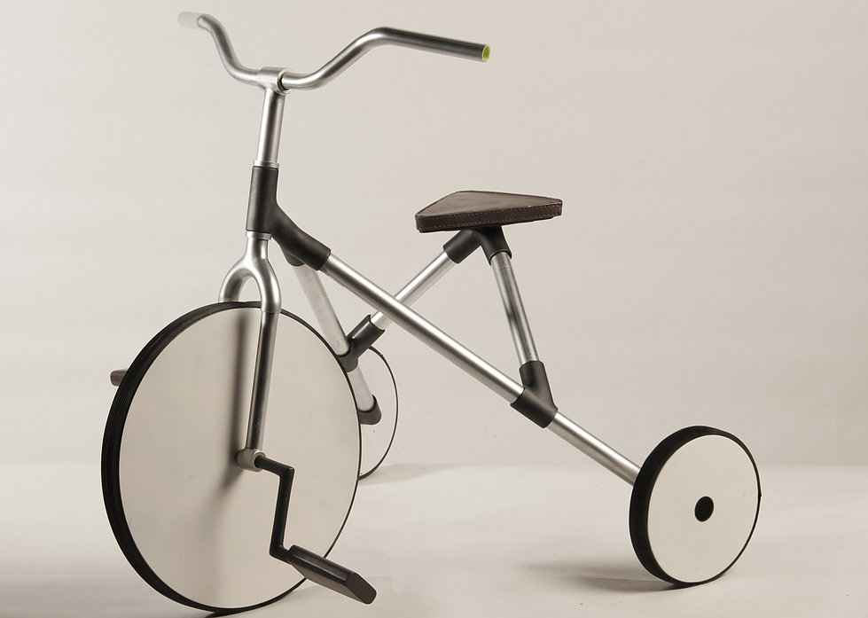
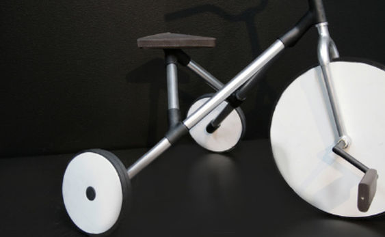
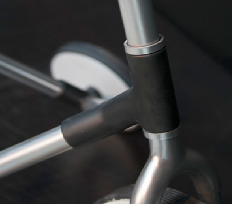

The tricycle is mainly inspired by hiking. The form comes from the mountains in the alps, thereof the triangle shapes.
What makes this tricycle special is the functionality. The assembly is easy with the connections.
I got influenced by the way you assemble tents and thought about a way to make the tricycle foldable.
This way, you can get the product in a flat package and also assemble it yourself.
This will also reduce the cost, with logistics in thought.